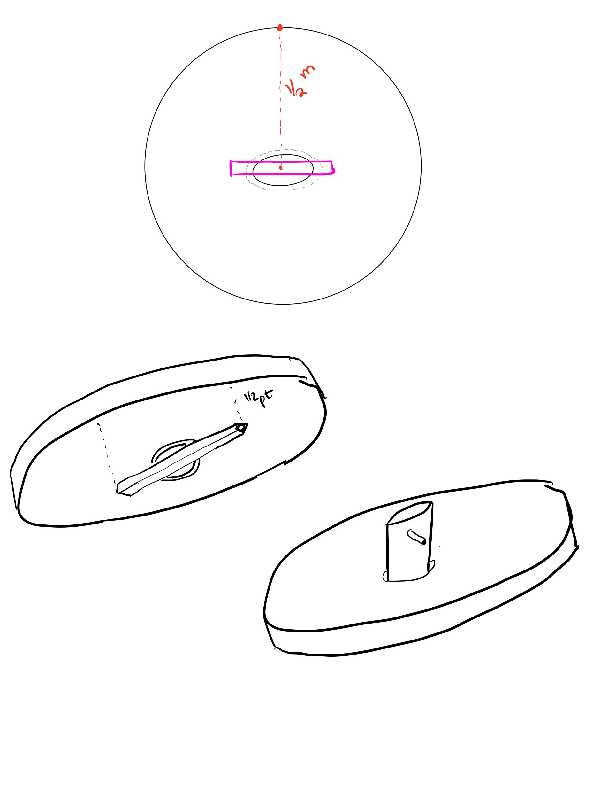

### Week 8
##### _Monday, October 24_
On Monday, we decided to change the composition of our reflector. With the metallic tapes being most reflective, we chose to tape the reflector pieces with the smoother tape. Additionally, the tracking system teams worked on the Arduino code and on the tracking board.
Anna and I also worked on sketches for the finished cooker to explore what elements would go where, and what additional elements we could manufacture to add functionality to the cooker. We were working with the idea of having a salt "sphere" instead of a salt brick, so the central pipe would have to come in contact with some sort of ball surrounded with insulating material. We considered the possibility of having the pipe and reflectior be removable from the base to allow for battery switching, and this also brought ideas of lids for the battery itself so that it could be stored and retain its energy.
Here are some sketches of mine:
##### _Wednesday, October 26_
With the taped reflector completed, we did a short test to observe the focal length of the reflector to ensure that it wasn't compromised or otherwise unexpected. The focal length was approx. 1m, which was expected.
People again split up, with the coding and tracking groups working together to debug code and construct the board. A few of us were left with Nathan to make sketches in Fusion360 of the reflector and central pipe. We will use these sketches later to machine the parts of the reflector.
Here is what the Fusion360 sketch roughly looked like:
